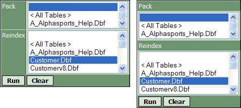

Creating Maintenance Components
The Maintenance Builder creates components that will pack (remove deleted files) and re-index Alpha Five tables.
To create a maintenance component.
Display the Web Projects Control Panel.
Select New > Alpha Five Web Component to display the Component Type dialog.
Select Maintenance and click OK.
Display the Form > Layout menu page.
Make a choice in the Layout Options > Layout Type list. The options are:
"Tabular"
"Stacked Columns"

The Tabular and Stacked Columns layout options
Optionally, click
 in the Layout Options > Style Name
property to select a cascading style sheet.
in the Layout Options > Style Name
property to select a cascading style sheet.Optionally, select Layout Options > Use simple style to have the component use the style of its container page.
Optionally, to create a freeform layout for the component:
Select Layout Options > Freeform Layout.
Click
in the Layout Options > Freeform Template
property to display the Freeform Layout dialog.You may create any legitimate HTML code between the
...
tags. Place the {PackList}, {ReindexList}, {SubmitButton}, and {ResetButton} placeholders in any positions where you are allowed to place HTML text.Optionally, click HTML Editor to edit the layout in the <span class=Screen>HTML Editor</span>.
Optionally, click Find Missing/Used Fields to identify any placeholders that are not in the layout.
Optionally, click Revert to Default Layout to discard any edits to a new freeform layout.
If you have saved the layout, clicking the Revert to Saved Freeform button will discard any changes made in the current editing session.
Display the Form > Options menu page.
Optionally, for each item in the Option Types list.
Set the Option Properties > Show Option property if you wish to display it.
Set the number of rows to display in the Option Properties > Height property.
Set the Option Properties > Show Select All Tables property if you wish to display this entry in the list.
Edit the text of the Option Properties > Select All Tables Text property.
Click
in the Option Properties > In-line
Style property to create an override style for the drop down list
control with the <span class=Screen>Style Editor</span>.Edit the label used for the function in the Row Properties > Row Label property.
Click
in the Row Properties > Row Label In-line
Style property to create an override style for the label.Enter bubble help text in the Row Properties > Label Bubble Help Text property.
Click
in the Row Properties > Cell In-line
Style property to create an override style for the label's cell.
Optionally, to hide the Submit button, clear the Submit/Cancel Buttons > Has Submit Button property.
Optionally, change the Submit button label in the Submit/Cancel Buttons > Submit Button Label property.
Optionally, click
in the Submit/Cancel Buttons >
Submit Button In-line Style property to create an override style
for the button.Optionally, enter bubble help text in the Submit/Cancel Buttons > Submit Button Bubble Help Text property.
Optionally, to hide the Cancel button, clear the Submit/Cancel Buttons > Has Cancel Button property.
Optionally, change the Submit button label in the Submit/Cancel Buttons > Cancel Button Label property.
Optionally, click
in the Submit/Cancel Buttons >
Cancel Button In-line Style property to create an override style
for the button.Optionally, enter bubble help text in the Submit/Cancel Buttons > Cancel Button Bubble Help Text property.
Optionally, select an alignment for the buttons in the Submit/Cancel Buttons > Button Alignment property. The options are"
"Center"
"Left"
"Right"
Optionally, select an order for the buttons in the Submit/Cancel Buttons > Button Order property. The options are"
"Submit Button First"
"Cancel Button First"
The maintenance complete page is a temporary page (automatically created for you) that displays while either a pack or re-index operation is processing. This page displays a "Completed Button".
Optionally, change the Completed button label in the Completed Button > Completed Button Label property.
Optionally, click
in the Completed Button > Completed
Button In-line Style property to create an override style for the
button.Optionally, enter bubble help text in the Completed Button > Completed Button Bubble Help Text property.
You may modify any of the messages that appear.
The Messages > Table Not Selected message appears when the operator clicks the Submit button without first selecting a table.
The Messages > Processing message appears on the maintenance complete page.
The Messages > Completed message appears when the selected operation completes successfully.
The Messages > Maintenance Failed message appears if an error occurs.
The Messages > Table Skipped message appears if an operation could not be completed for one or more selected tables.
The Messages > Unknown Error message appears if any other type of error occurs.
Supported By
Alpha Five Version 8 Professional Edition and Above
See Also